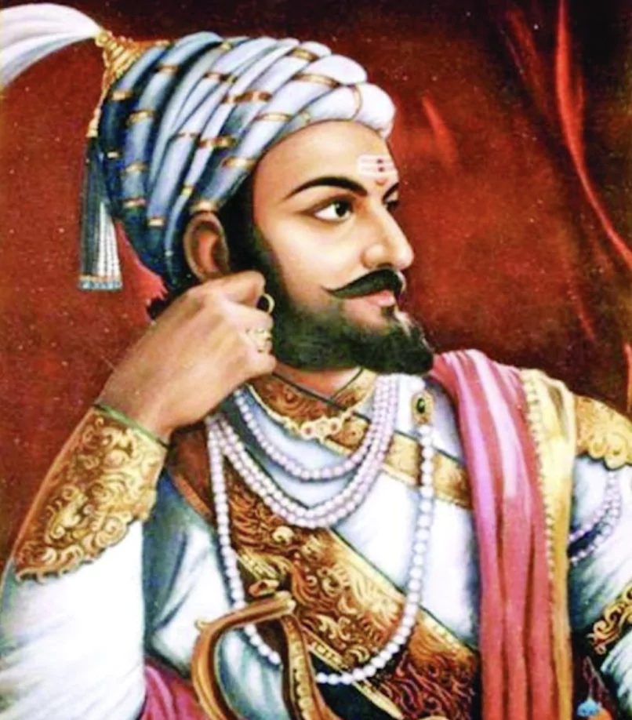

Chhatrapati Shivaji Maharaj
1630 - 1680
Maratha Empire
Shivaji Shahaji Bhosale ( February 19 , 1630 – April 3, 1680 ), popularly known as Chhatrapati Shivaji Maharaj , was an Indian king and founder of the Maratha Empire . Shivaraya carved out his own independent kingdom from the decaying Adilshahi of Bijapur and established the Maratha Empire. A.D. He was formally enthroned as Chhatrapati in 1674 at Raigad Fort